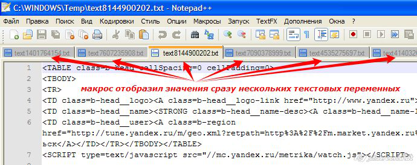

Данный макрос предназначен для облегчения анализа длинных текстовых строк. К примеру, в вашем макросе формируется длинная текстовая строка (вы сцепили значения диапазона ячеек, или загрузили текст веб-страницы в текстовую переменную) Чтобы проанализировать текст на этапе отладки программы, вам необходимо изучить структуру этого текста, - а это удобнее делать в текстовом редакторе В этом вам поможет макрос ShowText: Sub ПримерИспользования_ShowText() ' исходный текст любой длины в переменной txt txt = "Некая текстовая строка, которую нам надо сохранить в файл" & vbNewLine & _ "Поскольку текстовая строка весьма длинная, просматривать её в MSGBOX не удобно" & vbNewLine & _ "Потому мы её просмотрим в Блокноте, предварительно создав временный текстовый файл"
' сохраняем строку в файл, и открываем файл в Блокноте ShowText txt End Sub
Код макроса ShowText: Sub ShowText(ByVal txt As String, Optional ByVal index As Long) ' макрос сохраняет текст из переменной txt в текстовый файл ' (файл создаётся в папке для временных файлов, получает имя типа text####.txt, ' где #### - число, заданное через параметр index, или случайное 10-значное) ' После создания текстового файла он открывается в программе по-умолчанию (например, в Блокноте) On Error Resume Next: Err.Clear ' формируем имя для временного файла filename$ = Environ("TEMP") & "\text" & IIf(index, index, Left(Rnd() * 1E+15, 10)) & ".txt" ' сохраняем текст в файл With CreateObject("scripting.filesystemobject").CreateTextFile(filename, True) .Write txt: .Close End With ' открываем созданный файл CreateObject("wscript.shell").Run """" & filename$ & """" End Sub Результат отображения нескольких текстовых переменных в редакторе Notepad++ 
|